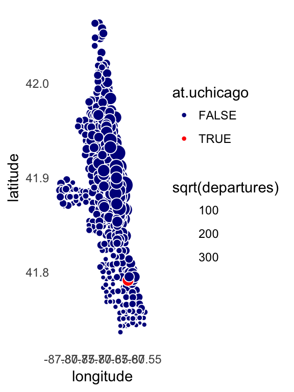

Last updated: 2017-07-07
Code version: e4ba033
In this analysis, I will use the Divvy trip and station data to generate a map of Chicago.
I begin by loading a few packages, as well as some additional functions I wrote for this project.
library(data.table)
library(ggplot2)
source("../code/functions.R")As before, I use function read.divvy.data to read the trip and station data from the CSV files.
divvy <- read.divvy.data()
# Reading station data from ../data/Divvy_Stations_2016_Q4.csv.
# Reading trip data from ../data/Divvy_Trips_2016_Q1.csv.
# Reading trip data from ../data/Divvy_Trips_2016_04.csv.
# Reading trip data from ../data/Divvy_Trips_2016_05.csv.
# Reading trip data from ../data/Divvy_Trips_2016_06.csv.
# Reading trip data from ../data/Divvy_Trips_2016_Q3.csv.
# Reading trip data from ../data/Divvy_Trips_2016_Q4.csv.
# Preparing Divvy data for analysis in R.
# Converting dates and times.I use the trip data to get the total number of departures by station. From these data, I create a new “departures” column in the table.
divvy$stations <-
cbind(divvy$stations,
data.frame(departures = as.vector(table(divvy$trips$from_station_id))))
summary(divvy$stations$departures)
# Min. 1st Qu. Median Mean 3rd Qu. Max.
# 1 557 3058 6188 9029 90040A plot of the Divvy stations by geographic location (latitude and longitude) traces the outlines of the City of Chicago and the Lake Michigan shore. Further, the location of the downtown is apparent by scaling the area of each circle by the number of trips.
The University of Chicago Divvy station is highlighted in red.
divvy$stations <-
transform(divvy$stations,
at.uchicago = (name == "University Ave & 57th St"))
ggplot(divvy$stations,aes(x = longitude,
y = latitude,
fill = at.uchicago,
size = sqrt(departures))) +
geom_point(shape = 21,color = "white") +
scale_fill_manual(values = c("darkblue","red")) +
theme_minimal() +
theme(panel.grid.major = element_blank(),
panel.grid.minor = element_blank())
This is the version of R and the packages that were used to generate these results.
sessionInfo()
# R version 3.3.2 (2016-10-31)
# Platform: x86_64-apple-darwin13.4.0 (64-bit)
# Running under: macOS Sierra 10.12.5
#
# locale:
# [1] en_US.UTF-8/en_US.UTF-8/en_US.UTF-8/C/en_US.UTF-8/en_US.UTF-8
#
# attached base packages:
# [1] stats graphics grDevices utils datasets methods base
#
# other attached packages:
# [1] ggplot2_2.2.1 data.table_1.10.4
#
# loaded via a namespace (and not attached):
# [1] Rcpp_0.12.11 assertthat_0.2.0 digest_0.6.12 rprojroot_1.2
# [5] plyr_1.8.4 grid_3.3.2 gtable_0.2.0 backports_1.0.5
# [9] git2r_0.18.0 magrittr_1.5 scales_0.4.1 evaluate_0.10.1
# [13] stringi_1.1.2 lazyeval_0.2.0 rmarkdown_1.6 labeling_0.3
# [17] tools_3.3.2 stringr_1.2.0 munsell_0.4.3 yaml_2.1.14
# [21] colorspace_1.3-2 htmltools_0.3.6 knitr_1.16 tibble_1.2This R Markdown site was created with workflowr.